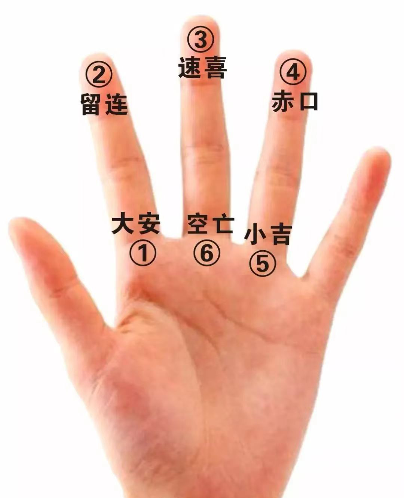

小六壬文初师叔教学

==仅供内门弟子传阅==
==酉辰读书会文初老师整理研究==
==禁止盗用流传，否则法力不灵==
一、什么是小六壬
小六壬是我们传统占卜中用的比较多的一种预测术，尤其是对于问人行踪、断事、寻物都很准确。可以用来日常占卜预测，快速简单尤其是预测短期事情，非常准确。
二、小六壬的定义
壬子、壬戌、壬申、壬午、壬辰、壬寅合称为六壬。
三、 小六壬共有六神：
大安、留连、速喜、赤口、小吉、空亡
四、小六壬的阴阳
分别以大安、速喜、小吉为阳，以留连、赤口、空亡为阴。三阳神里以大安为大吉、速喜为中吉、小吉为小吉，三阴神里以留连为小凶、赤口为中凶、空亡为大凶。
五、日月时基础知识
月份：正月、二月、三月、四月、五月、六月、七月、八月、九月、十月、冬月、腊月
十二地支时辰：(1) 子时(23点～1点)；(2) 丑时(1点－3点)；(3) 寅时(3点－5点)；(4) 卯时(5点～7点)；(5) 辰时(7点－9点)(6) 巳时(9点～11点)；(7) 午时(1l点～13点)；(8) 未时(13点－15点)；(9) 申时(15点～17点)；(10) 酉时(17点－19点)；(11) 戌时(19点～2l点)；(12) 亥时(21点～23点）
六、六种掌诀定位
大安定位–食指根部;
留连定位–食指指尖；
速喜定位–中指指尖；
赤口定位–无名指指尖;
小吉定位–无名指根部；
空亡定位–中指根部空亡定位–中指根部掐算顺序按:
（1）大安–（2）留连–（3）速喜–（4）赤口–（5）小吉–（6）空亡.此顺序永远固定不变
七、推算方法
-
小六壬初始通用算法
预测时只须提取当时的月、日、时。用左拇指在六个掌诀位上按顺时针方向依次掐算即知结果。其法以大安起正月，月上起日，日上起时。
-
变通取数法
以上用月、日、时取数推算为正统方法。从数的角度理解，月、日、时不过是三个数字而已。所以我们也可以用其他方法任意取三个数字代替月、日、时进行预测，效果是一样的。取数的方法千变万化，可以不拘于任何形式。如任意写（报）三个数字，或写三个汉字（需一笔一划用正规笔画数），或随机抽三张扑克片牌，等等。都按照掌决图去掐算，最后的结果都是准确的。
月、日、时取数法实践运用时有很大的局限性，如同一时辰多人同时求问，月、日、时取数法就没办法对应全部。但是变通取数法可解决这一难题，取数更为灵活方便。 -
随机取数法
在中华众多预测法中，都十分重视预测时信息提取的随机性、偶然性。强调第一印象、第一感觉，甚至瞬间灵感的重要性。一些带有先入为主，人为的设定、刻意的思维都会影响预测的准确性。月、日、时取数法和变通取数法都是以三个数字作为取数推算的标准。在变通取数法的基础上，进一步领悟，并受某一易经预测法灵感、瞬间信息起卦法的启发。结合自身实践，我对取数法又作了进一步的探索、验证，逐步拓展和突破前两种取数法的约束和局限性。
随机取数法的取数个数可以不受任何限制。取1个、2个、3个、10个、20个等都可以。不管对方写多少个数字或多少个汉字，都可以按月、日、时取数法和变通取数法进行摘指推算这鱿更方便了取数，增强了取数的随机性和范围。小六壬的精髓之一–灵感灵动取数也得到了最完美的体现。随机取数的方法千交万化，只要能够变成数的方法都可以来用．如提取电话号码、座位号、房间号、生肖、年龄数、门牌号、书本页码、抽扑克牌、抓东西等，想用什么就用什么，也就是我们通常所说的八卦万物类象，所闻所见皆可取象转为数。